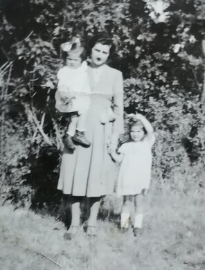
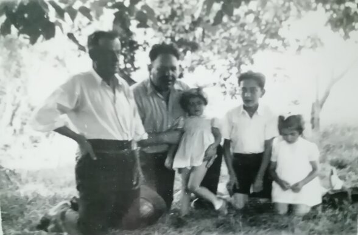
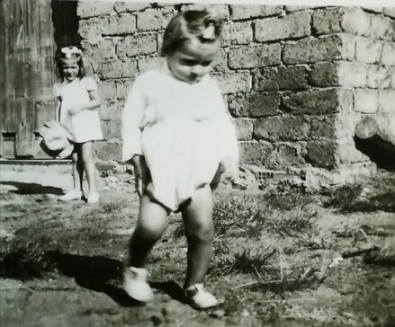
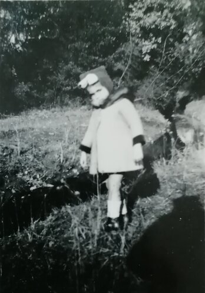
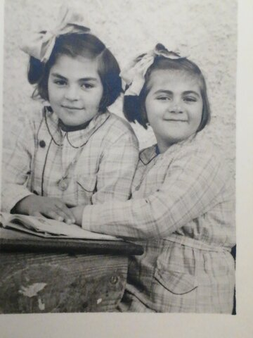
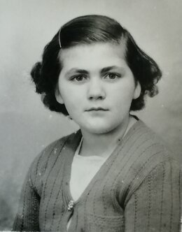
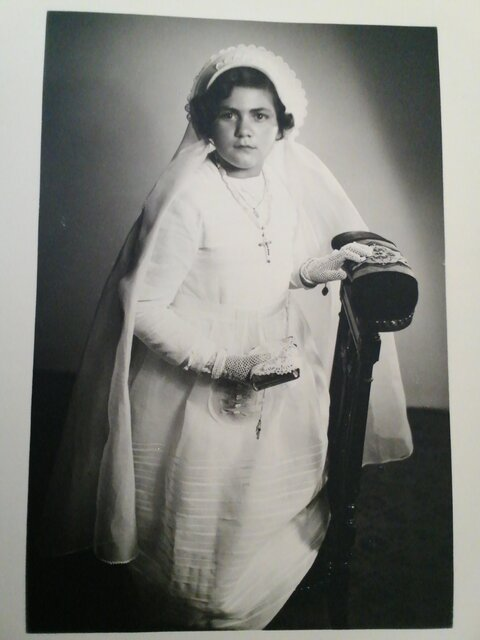
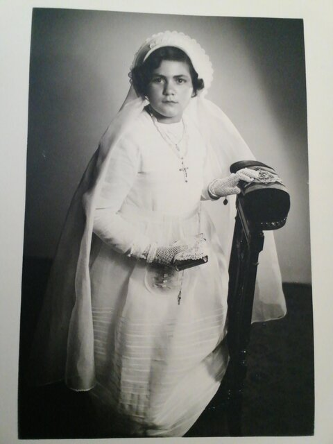
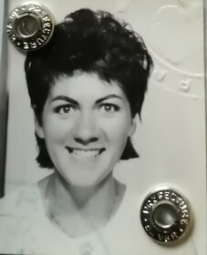

Jeunesse
Simone est née à la Seyne-sur-Mer. Pendant sa jeunesse, elle vit à Sully-sur-Loire, au Cannet des Maures et aux Arcs-sur-Argent.










Correspondante
Au lycée, Simone étudie l'allemand. Elle devient très amie avec sa correspondante Goudroun.
Cette dernère viendra lui rendre visite en 1960. Ce sera l'occasion pour la famille de se rendre à Venise.
Puis Simone, ira en Allemagne en 1962 et visitera Berlin Ouest et Est(DDR).